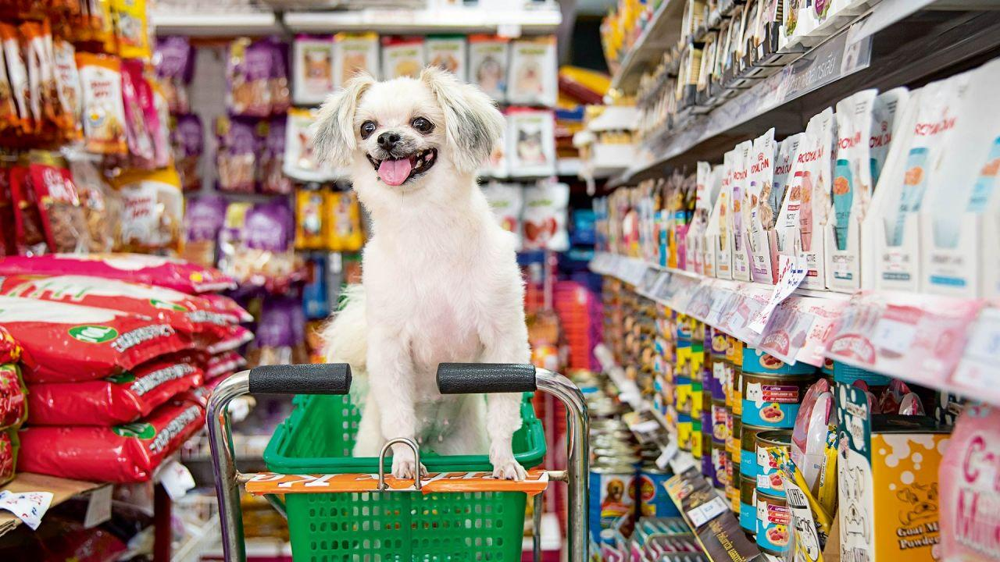
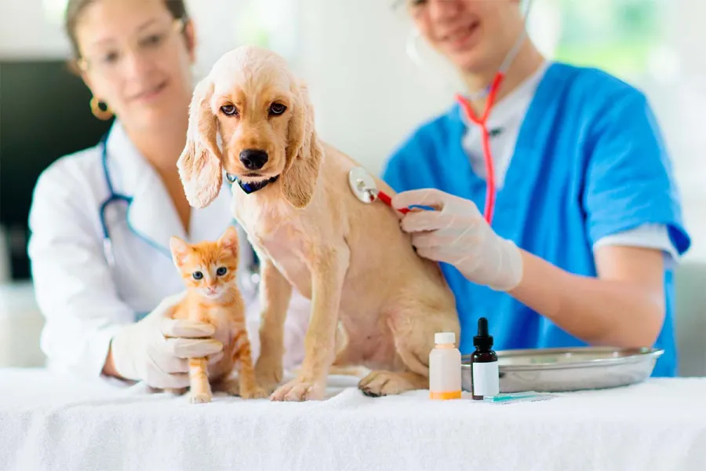
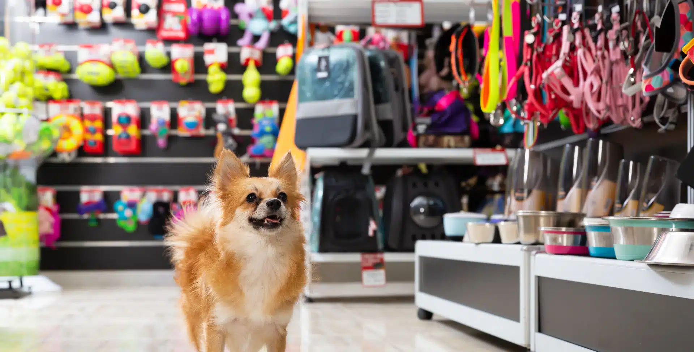

Nuestros Servicios
- 🛁 Baños y cortes: Higiene y estética para tu mascota, con productos seguros y personal calificado.
- 🩺 Consultas médicas: Diagnóstico y tratamiento profesional para mantener a tu mascota saludable.
- 🧪 Análisis de laboratorio: Exámenes clínicos para una atención veterinaria precisa y efectiva.
- 💊 Venta de productos farmacéuticos y cosméticos: Medicamentos, vitaminas, shampoo y más para el cuidado integral.